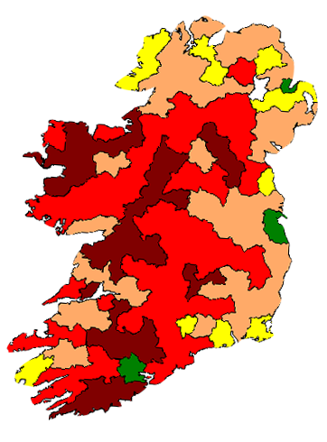
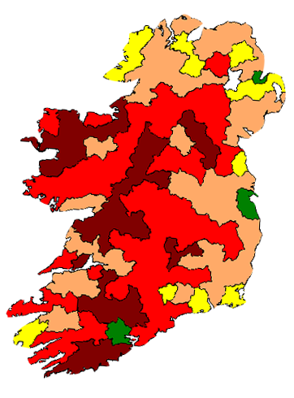

The History of the Potato
Baked or fried, boiled or roasted, as chips or fries. At some point in your life, you've probably eaten a potato. It's delicious, for sure! However, potatoes have played much more a significant role in our history than just that of a dietary staple we have come to know and love today. Without the potato, our modern civilization might not exist at all.
8000 - 5000 BC: Potatoes first domesticated in Peru
Click on the red circle to find out who first cultivated the potato.
Incans Thrived on Potatoes
Potatoes were the perfect food source to fuel a large Incan working class as they built and farmed their terraced fields, mined the rocky mountains, and created the sophisticated civilization of the great Incan empire. Hover over the potato to see why it served as a great food source for the Incans.
1536: Potatoes travel to Europe
Considering how vital they were to the Incan people, when Spanish sailors returning from the Andes first brought potatoes to Europe, the spuds were duds. Europeans simply didn't want to eat what they considered dull and tasteless oddities from a strange new land, too closely related to the deadly nightshade plant, Belladonna, for comfort.
Instead of consuming them, they used potatoes as decorative garden plants. More than 200 years would pass before the potato caught on as a major food source in Europe. Though even then, it was predominantly eaten by the lower classes.
1750s: Sprouting empires
European peasants with greater food security no longer found themselves at the mercy of the regularly occuring grain famines of the time, and so their populations steadily grew. As a result, the British, Dutch, and German empires rose on the backs of the growing groups of farmers, laborers, and soldiers, thus lifting the West to its place of world dominian.
1845-1852: Irish Potato Famine
However, not all European countries sprouted empires. After the Irish adopted the potato, their population dramatically increased, as did their dependence on the potato as a major food source. Then, disaster struck. From 1845 to 1852, the potato blight disease ravaged the majority of Irish potato crop, leading to the Irish Potato Famine. Over a million Irish citizens starved to death, and 2 million more left their homes behind. Click on the map to watch the Irish Potato Famine befall Ireland.
Ireland Population Fall 1845-1852
Hover over the legend to display what each color indicates.
 

Over 30%
20 to 30%
10 to 20%
0 to 10%
Population rise

1850s: Industrial Revolution
This wasn't the end for the potato. The crop eventually recovered, and Europe's population, especially the working classes, continued to increase. Aided by the influx of Irish migrants, Europe now had a large, sustainable, and well-fed population that was capable of manning the emerging factories that would bring about our modern world via the Industrial Revoluation.